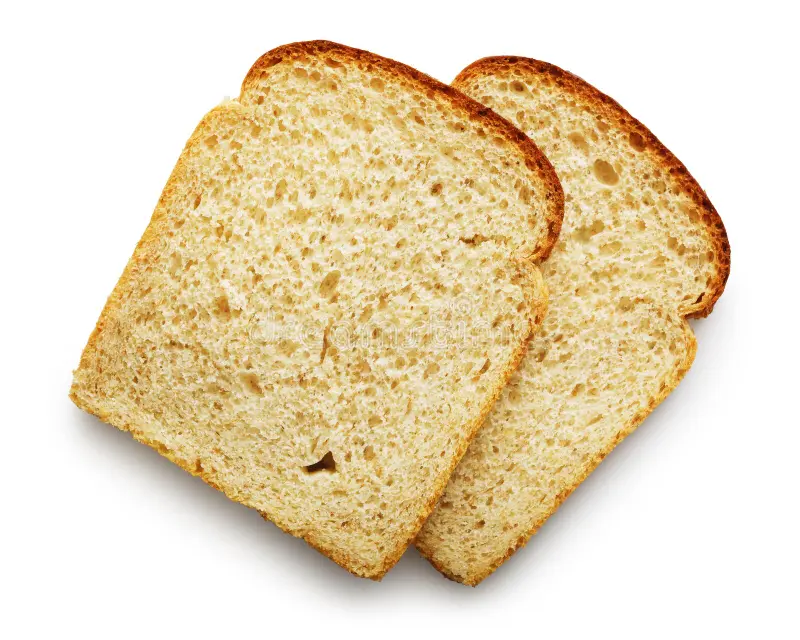

Fair warning: this is the first page I made, so I'm experimenting. At the moment, there's nothing more—just a bit of explanation on why I'm so focused on bread and why this singular slice of bread is very important.
So, my real reason is that I lied. There's no real reason for this slice of bread; it's mainly because it's a piece of bread and it's just there.